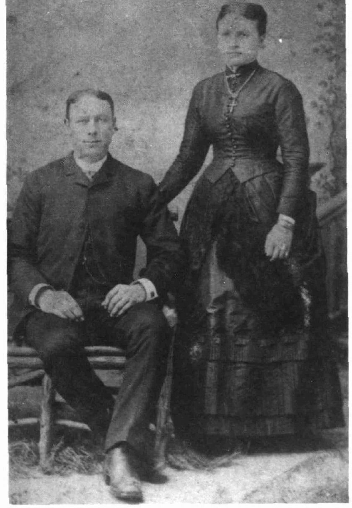

Husband of Mary Kastl · Peter’s branch
Joseph Cuda
1864–1946

What the book records
| Also written as | Joe Cudap. 19As printed
|
|---|---|
| Born | 28 June 1864, near Prague, Bohemiap. 20 p. 19 |
| Occupation | Farmer and horticulturist (wheat, figs, peaches, grapes); planted the first vineyard in Kern County with the father of Elza Foustp. 19 |
| Lived | Nebraska; then a farm in Kings County near Hanford, California; from 1888 Kern County, California, 14 miles southeast of Bakersfield, between Arvin and Lamontp. 19 p. 20As printed
|
| Married | (2) Sadie, 6 April 1909; she died April 1948p. 20 |
| EmigratedThe sources differ | 1869, aged four, with his parentsp. 19 |
In infancy, with his parentsp. 19As printed
| |
| Homestead | 1888: 160 acres in the Weed Patch, Kern County, California; proved up after seven years, sold half and kept eighty acresp. 19 |
| Died | 30 December 1946p. 20 p. 19 |
| Noted | Son of John Cuda and Katherine Presilp. 20As printed
|
Son of John and Catherine (Pracil) Cudap. 19As printed
|
Family
Spouse
Mary Kastl 1865–1902
Married 21 January 1887, Plasi, Nebraska p. 15 p. 20
Children
- Frank Thomas Cuda 1888–1943
- Helen Cuda b. 1891
Joseph Cuda's mother is printed "Katherine Presil" in this entry and "Catherine (Pracil)" in the reprinted History of Kern County (p. 19). The articles on p. 19 say there were two Cuda children, Frank and Helen.